John Napier: Scottish (1550–1617)
The use of the decimal point in mathematics and the application of logarithms to do calculations are largely due to the influence of Scottish mathematician John Napier, who was born on February 1, 1550, at Merchiston Castle in Edinburgh, Scotland. Napier was part of a noble family, so he was privately tutored until the age of thirteen, after which he entered St. Salvator’s College at St Andrews. It is not known how long he stayed there, but it is believed that he traveled through Europe for several years, until 1571, when he returned to Scotland. In 1572, Napier married sixteen-year-old Elizabeth Stirling, also a product of nobility. He fathered two children in this marriage; but, unfortunately, his wife, Elizabeth, died in 1579. Shortly thereafter, Napier married Agnes Chisholm, with whom he had ten more children.
Later, in 1608, when his father died, Napier moved with his family into Merchiston Castle in Edinburgh, where he resided for the rest of his life. In 1614, Napier published a book, Mirifici Logarithmorum Canonis Descriptio (A Description of the Wonderful Table of Logarithms); it contained 147 pages, of which 90 were consumed with tables of numbers related to natural logarithms. This effort had begun around 1594, when he computed millions of entries, which took an incredibly long time. We can see from figure 12.2 what the first page of these listings looked like, which allows us to appreciate the intensive labor this must have required. Napier was asked to show the benefit of the logarithms system. He responded by showing that finding the geometric mean can be done far more efficiently using logarithms than simply doing the straight-out arithmetic—particularly when the numbers are very large. Napier also realized that by using logarithms, calculations that typically required multiplication or division, could now be reduced to addition or subtraction of exponents—or, in this case, logarithms.
Figure 12.1. John Napier. (Engraving by Samuel Freeman, 1835, based on a 1616 painting in the University of Edinburgh and published in Robert Chambers, ed., A Biographical Dictionary of Eminent Scotsmen, vol. 4 [Glasgow: Blackie & Son, 1835], facing page 88.)
In addition, his book also treated the topic of spherical trigonometry. However, his invention of logarithms first became popular when Henry Briggs visited him in 1615, and helped him revise the logarithm tables. Essentially, Napier’s work with mathematical computation had a great deal of influence on the scientists of his time, including the famous Danish astronomer Tycho Brahe (1546–1601). Sadly, just as the book was gaining popularity, Napier died, in Edinburgh on April 4, 1617.
Let us consider some of the advantages that Napier’s work had provided during the seventeenth century and beyond. This was a time when mathematicians were very concerned about calculation, and how it could be simplified or mechanized. Toward that end, Napier developed a mechanical system, known as Napier’s Rods, which we might consider a very early version of a calculator.1 This system for performing multiplication, using only addition through the use of specially constructed strips, is shown in figure 12.3. The rods can be made out of cardboard, wood, or—what John Napier used when he invented this system of multiplication—bone, which provides us with another name for this method: Napier’s Bones. Before reading what follows, you may want to spend a little time examining this figure to try to understand the logic of the construction.
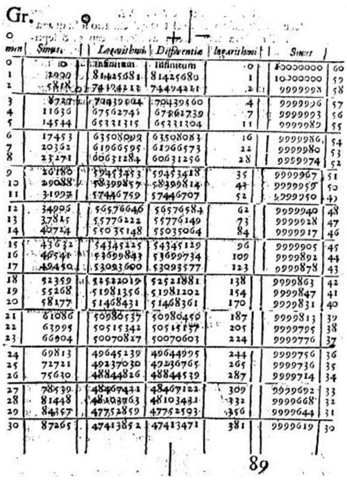
Figure 12.2. The first page of Napier’s tables. (Image from Landmarks of Science Series, NewsBank-Readex.)
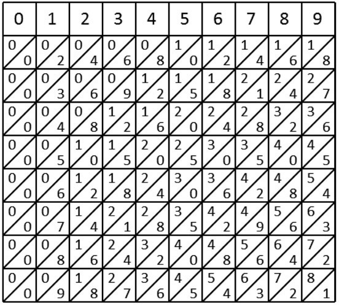
Figure 12.3.
There are ten vertical rods, each of which shows a specific column from the multiplication table written in a peculiar manner. Notice how the rod marked at the top with the digit 5 continues downward, with each of the multiples of 5 (10, 15, 20, etc.) written such that the tens digit is above the diagonal line and the ones digit is below the line. The same principle can be observed in the other rods: the fifth entry on the number 7 rod is 35, which is the same as the product 5 ∙ 7 = 35. (Notice also that we put a 0 above the slash in entries where the product is less than 10.)
These rods can be rearranged freely, permitting us to construct the numbers we want to multiply and then to perform the computation using only addition. How is this possible? Let’s look at an example to learn about the method Napier devised.
We will choose two numbers at random, in this case, 284 and 572, and then select the rods whose top digits will allow us to construct one of the numbers. It doesn’t matter which of these two numbers we choose to represent first. Thus, in this example we will construct 572, selecting the rods numbered 2, 5, and 7, and then putting them in the correct order to match our number: 5, 7, 2 (see fig. 12.4).
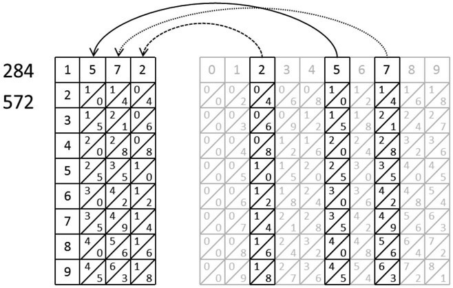
Figure 12.4.
We have written the digits 1 through 9 along the left-hand side, in a single column. In Napier’s original construction, these numbers were written or engraved along the side of a shallow box inside of which the rods fit snugly. If you choose to re-create this example on your own, writing the numbers on a sheet of paper will work just fine, as long as you make sure to line up the tops of your rods appropriately as you place them.
As you may have already guessed, the next step is to identify the rows that we will need to construct our second number. With physical rods, it would not be possible to extract these rows, but for our illustration we will rearrange them, as indicated by the arrows, to form the number 284 (again maintaining proper alignment; see fig. 12.5).
In order to illustrate the next step, we will de-emphasize the boundaries between the rods, while highlighting the diagonal lines (see fig. 12.6). At the end of each diagonal, we have created a space where our sum can be written, as indicated by the dashed arrows. It looks like our product will be a six-digit number, since there are six diagonals in our final computation.
We find the sum of each diagonal, moving from the bottom-most diagonal to the upper-most diagonal; whenever that sum is greater than 9, we write the digit to be carried in a slightly smaller font inside the box, as well as at the head of the next diagonal, again, moving from the bottom-most
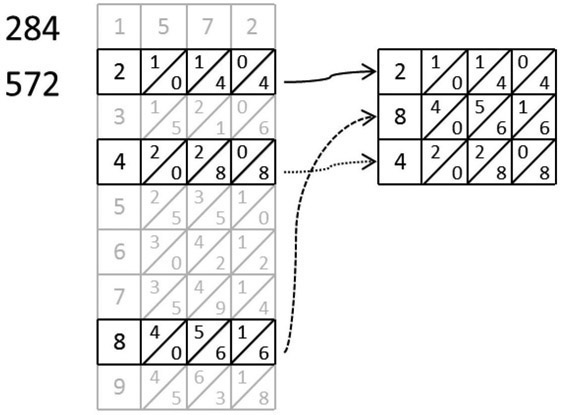
Figure 12.5.
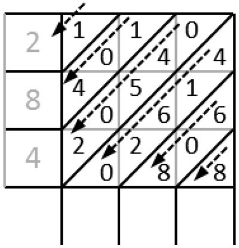
Figure 12.6.
to the top-most diagonal. Looking at the second diagonal, you can see the sum: 8 + 0 + 6 = 14, which means the tens digit of our final product will be 4, while the 1 is carried to the head of the third diagonal and added to the other numbers there, as shown in figure 12.7.
Proceeding along each diagonal, we see the sums are 8, 14, 14, 12, 6, and 1. Reading these in order from the top down and from left to right, without the carried digits, we get 1 6 2 4 4 8, which indicates that our final product is 162,448. You can check this with your calculator to verify that it is, indeed, correct!
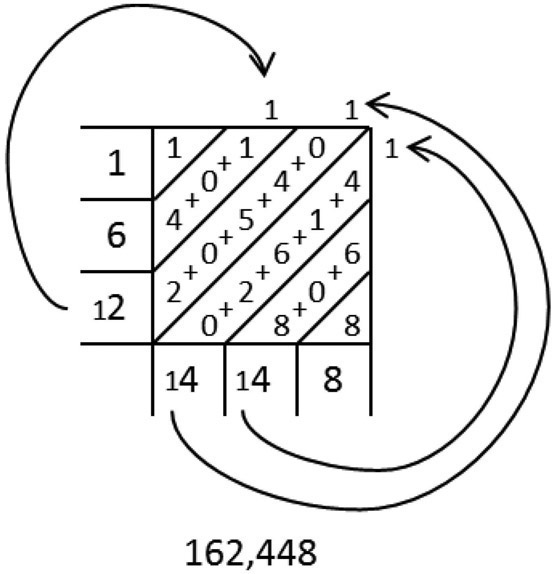
Figure 12.7.
How does this method work? Normally, the multiplication of two numbers is performed by successive digit multiplications and positional arithmetic. When you do multiplication according to the method typically taught in elementary school, you place one number above the other with a line underneath and multiply pairs of digits. As you do so, you write the ones digit of each product below the line, carrying the tens digits when necessary, and taking the sum of the partial products at the end of the process. To illustrate how Napier’s Rods work, we will break down this process step-by-step. Recall, our problem is 572 ∙ 284.
The first step is to multiply 572 by 4.
The products of these multiplications are 4 ∙ 2 = 8, 4 ∙ 7 = 28, and 4 ∙ 5 = 20. Carrying the 2 from the second multiplication and adding these together, we get a partial total of 2288 (see the left side of fig. 12.8). Notice that 2288 is the same result we would obtain from adding the diagonals of row 4 of figure 12.4 (see the right side of fig. 12.8).
Repeating this process for the second digit, 8, we get 8 ∙ 572 = 4,576, which again is the same result we get from adding the terms in the diagonals of the eighth row of figure 12.4. According to the algorithm we know from elementary school, we insert a 0 in the ones column, leaving us with 45,760 in the new, final row (see fig. 12.9).
Next, we multiply 2 ∙ 572 and insert two 0s, giving us 114,400, the first four digits of which we recognize from the second row of Napier’s Rods (see fig. 12.10).
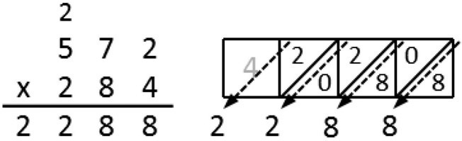
Figure 12.8.
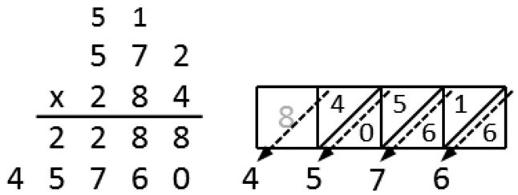
Figure 12.9.
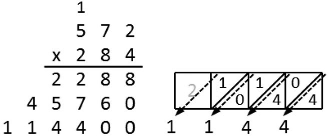
Figure 12.10
Finally, we add these three numbers (2,288 + 45,760 + 114,400). Again we find a result of 162,448, which is indeed the correct product, as shown in figure 12.11.
To complete our illustration of this method, we will do one final alteration: Instead of adding the digit products as we go, we will instead write the products as we did when constructing Napier’s Rods, using a leading 0 for any number less than 10. Each product will be written with the appropriate offset, but in the same order we used when performing the previous operations.
Alongside this, we will draw the relevant portion of our Napier’s Rods, this time rotated one-quarter turn, as we have in figure 12.12.
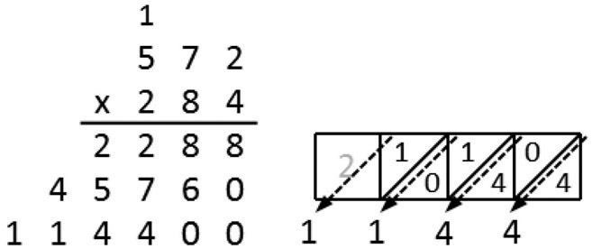
Figure 12.11
Do you notice anything interesting? That’s right—each digit we produced using the traditional method of multiplication is also present in the Napier’s Rods representation, in the proper column! Also, if you look closely at the dark-outlined rows, you will notice that there is an exact correspondence between these rows and the respective digit products. So, for instance, the final three rows on the left (moving upward from the bottom) are 10, 14, and 04, and these same numbers are in the top column in the figure on the right.
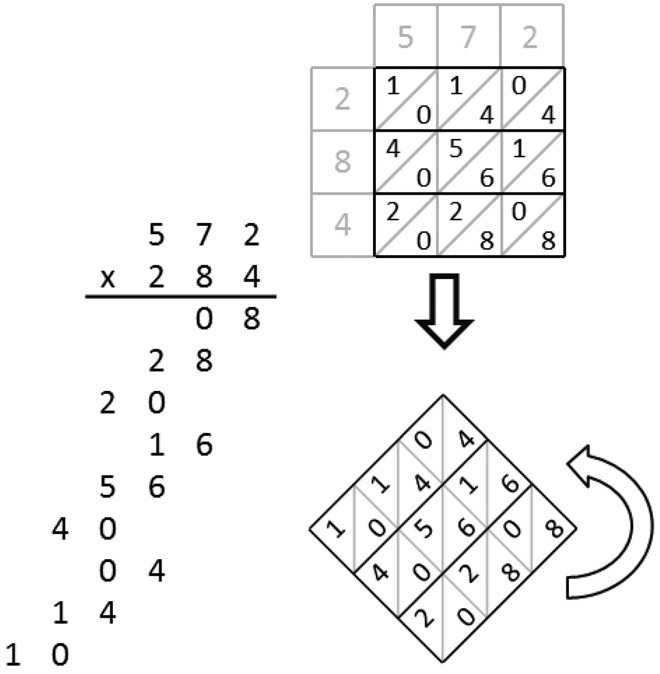
Figure 12.12
As we have observed, the method of Napier’s Rods is mechanically identical to our elementary-school algorithm, but it can make keeping track of the positions of each digit much easier. As an added advantage, it helps us to avoid multiplication errors—after all, most of us can do addition much more accurately than we can do multiplication!
Although by today’s standards this method of calculation is rather primitive, one must bear in mind that for the times, when this was developed in the seventeenth century, it was seen as a great step forward. So much so, in fact, that Napier is probably better known for Napier’s Rods, or Napier’s Bones, than he is for his introduction of logarithms as an efficient method of calculation going forward centuries.